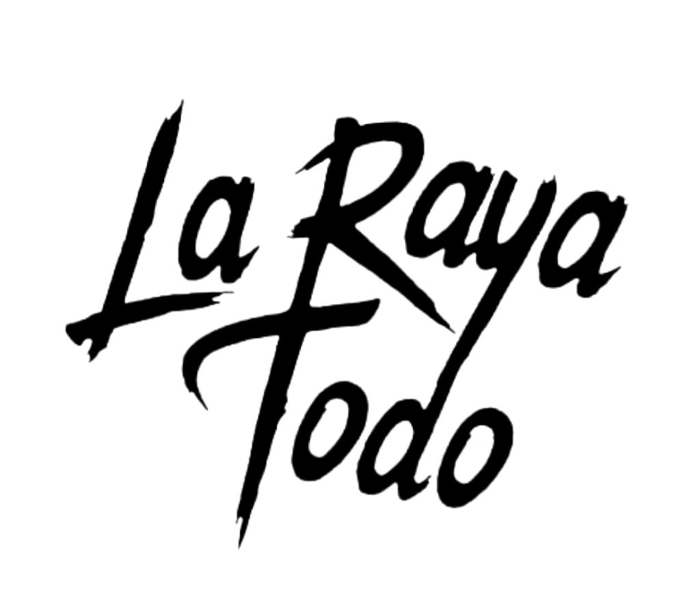
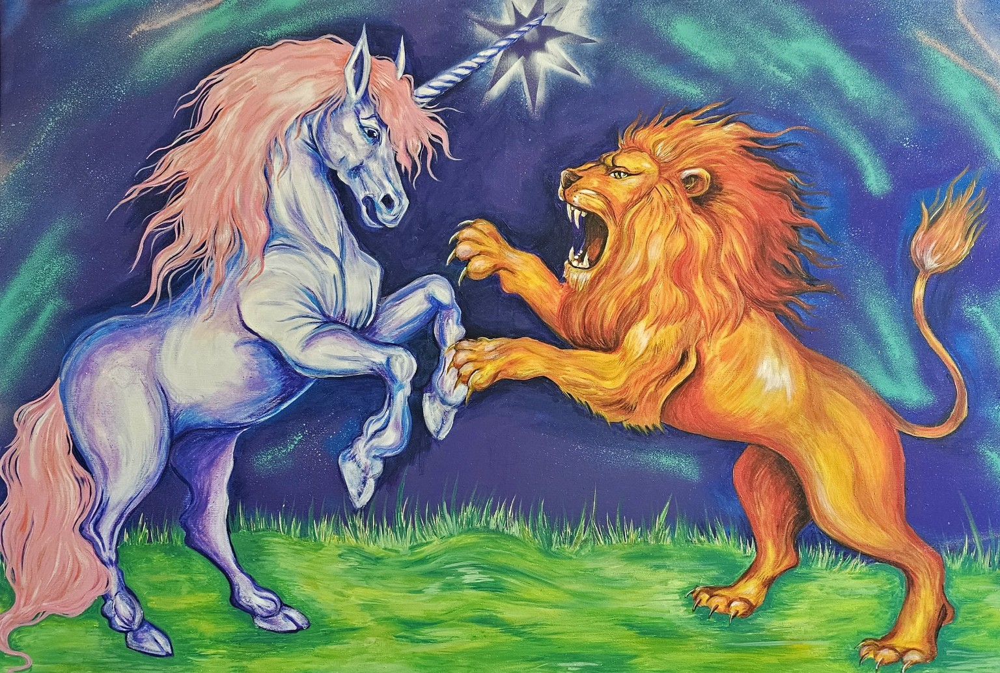
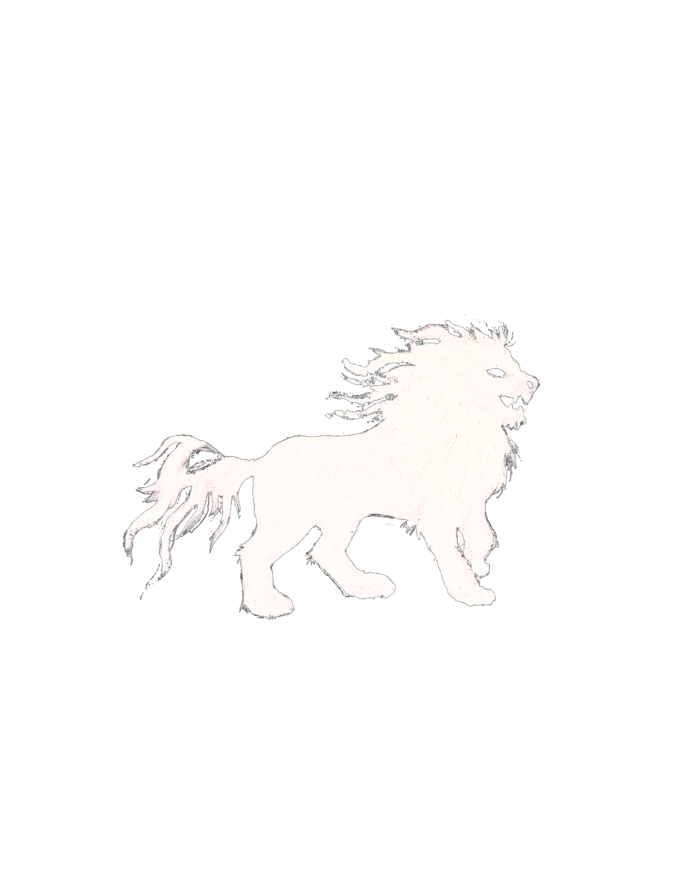

Templo del Pop de Miranda
Geometría, color y equilibrio en una composición de formas suspendidas.


UN ARCHIVO EN MOVIMIENTO
Experimentos visuales realizados con código y formas generativas.
Geometría, color y equilibrio en una composición de formas suspendidas.
Una trama cromática de fragmentos, saturación y caos digital.
Líneas curvas y colores luminosos que se cruzan y parecen fluir.
Una red de trazos, conexiones y acumulaciones que irradia desde el centro.
Corazones translúcidos, repetición y una expansión de tonos rosados.
Un jardín digital de formas geométricas que se despliega y crece.
Personajes, naturaleza y mundos imaginarios en color y tinta.
Color, gesto y movimiento en un paisaje floral.
Dos fuerzas fantásticas en tensión y movimiento.
Una escena fantástica construida con tramas y contrastes.
Lo orgánico y lo inquietante se encuentran en una misma imagen.
Personajes, color y un pequeño mundo de fantasía.
Una confrontación fantástica entre el unicornio y el león.
El paisaje como campo de color, gesto y energía.
COLECCIÓN DISPONIBLE
Los Unicornios Existen · Poleras y tote bags
Soy artista y estudiante de Diseño. Me interesa explorar los cruces entre el dibujo, la pintura, la imaginación y las herramientas digitales.
Este portafolio reúne una parte de mi trabajo visual y mis experimentos de Imagen Escrita: un espacio para probar, mezclar lenguajes y dejar que las ideas tomen su propio rumbo.
